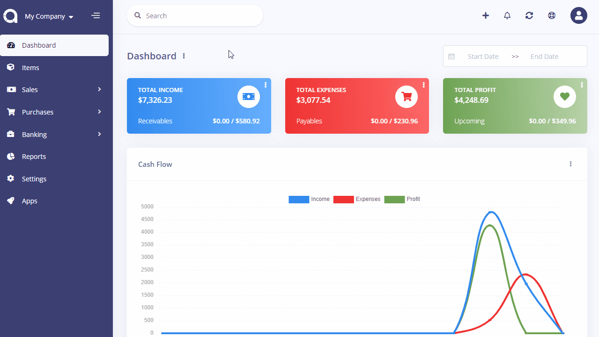

Default Settings
Default settings page is located under Settings menu. On this page you can set up the settings for each company.
- Account: Default account to be used when marking invoices/bills as paid.
- Currency: Default currency to be used in charts etc.
- Tax: Default tax to be used when creating an item, customer, etc.
- Payment Method: Default payment method to be used when marking invoices/bills as paid.
- Language: Default language to be used in the User Interface.
- Records Per Page: Number of records to be shown in list page.
- Use Gravatar: Select whether to use gravatar as profile picture at the right top.
